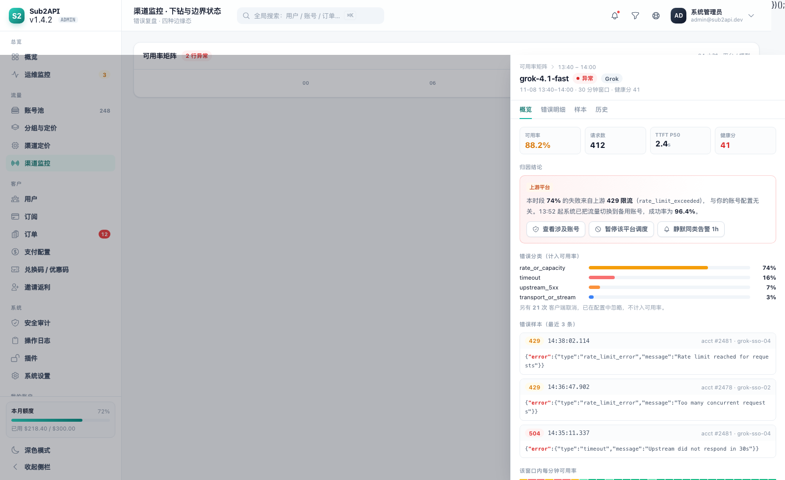
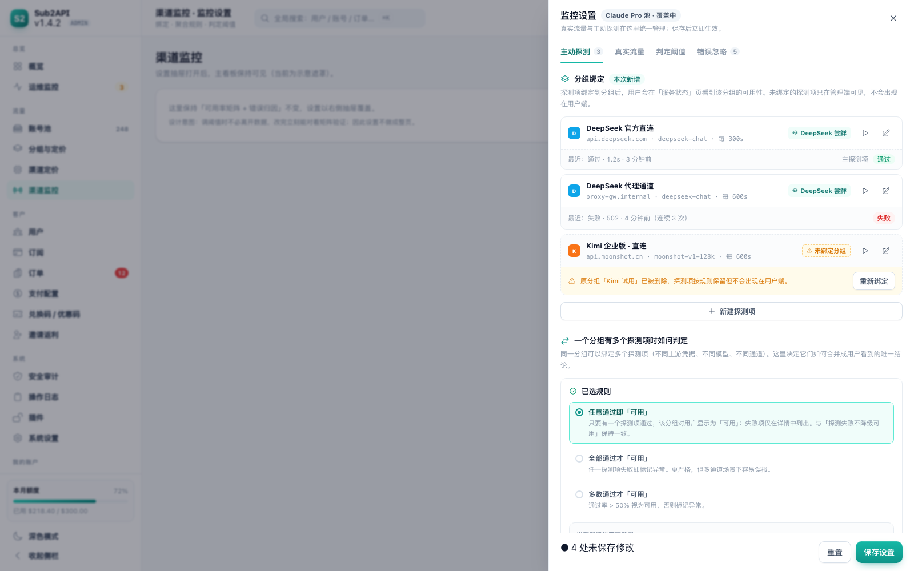
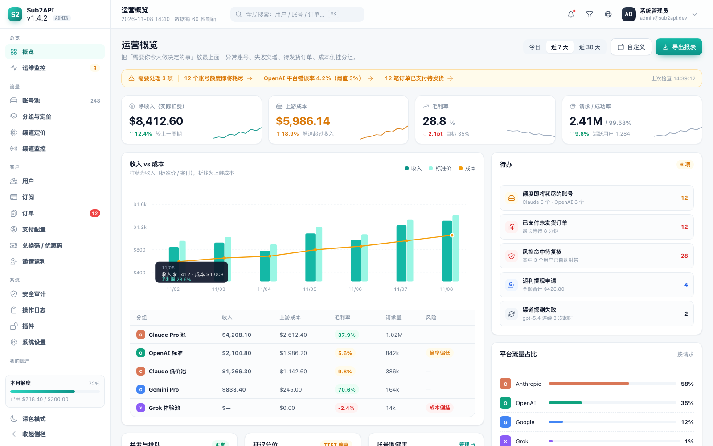
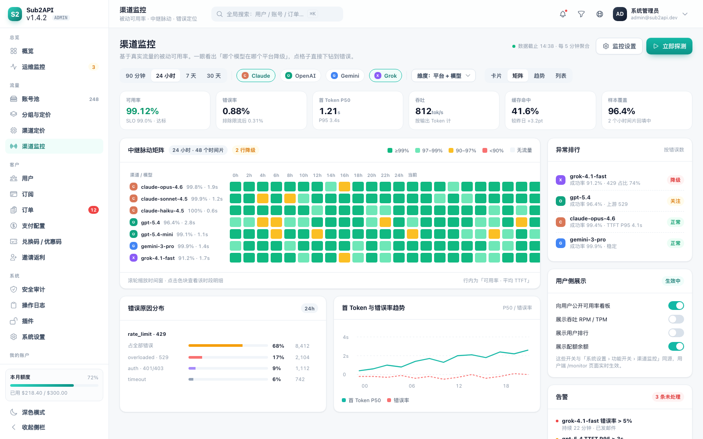
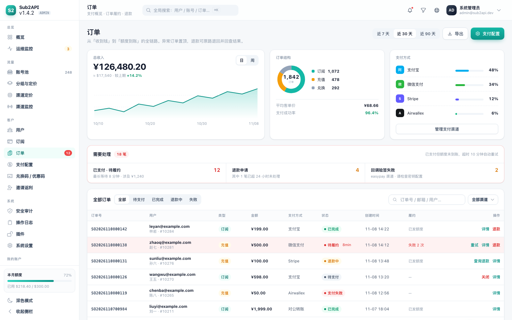

Sub2API 界面重设计 原型交付
基于现有 44 个页面、约 480 条 UI 接口重新组织的信息架构与视觉语言：把「菜单平铺」改为「业务分组」， 把「配置弹窗」改为「双栏编辑」，把「统计卡片」改为「一屏一决策」，并统一了状态色板、表格规格与深色模式。 下面 13 个页面均为可直接打开的静态高保真原型（含深色版本），其中「渠道监控专项」为本次新增的完整方案。
用户端
4 组 12 项菜单 · 登录 / 工作台 / 密钥 / 状态
订阅额度 / 余额 / 并发一眼可见；今日 KPI 带 sparkline；平台分项与最近请求并排。

固定列宽表格 + 三窗口限速可视化 + 批量条；新建改为右侧抽屉，共 6 组字段。

左侧品牌 + 终端接入演示，右侧多方式登录；同页切换用户端渠道状态（平台卡片 + 事件流）。
渠道监控专项
真实流量 + 主动探测合并 · 按责任方归因
一个分组一个结论：真实流量用连续色条、主动探测用点阵，每条都标证据来源与检测时间；探测失败只标「探测异常」，不降级「可用」。

结论条置顶；矩阵 4 档离散色 + 悬停看健康分；右侧按责任方（上游 / 账号池 / 客户端 / 内部）归因并给出可执行动作。

点色块后的错误复盘：KPI → 一句话归因（含涉及账号）→ 分类条 → 错误样本 → 分钟级时间线，并给出可执行的下一步动作。

探测项绑定分组（含删除后的孤儿处理）；多探测项聚合规则与实时效果预览；12 次阈值可配并换算成「多久后暴露」。
管理端
5 组导航 · 从「待办」到「明细」的完整动线
「需要处理」置顶；收入 vs 成本双轴对比；分组毛利表直接标出成本倒挂；右侧待办与流量占比。

平台 Tab + 摘要带 + 过滤 chips；配额余量、并发、调度状态同行呈现，详情抽屉随时查看。

左列表右配置；10 个配置 Tab；逐模型定价可内联编辑并实时显示毛利；复合路由可视化。

中继脉动矩阵（24h × 48 片）一眼定位降级模型；错误分布与 P50 趋势并排；右下角控制用户侧展示。

健康环 + 6 项实时 KPI（WS 推送）；并发/延迟/吞吐/告警三栏；系统日志沉底全宽。

收入趋势 + 订单结构 + 渠道占比三卡并列；「需要处理」独立警示区；退款弹窗含余额差额提示。